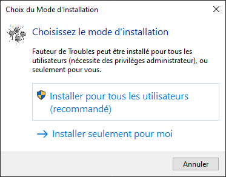
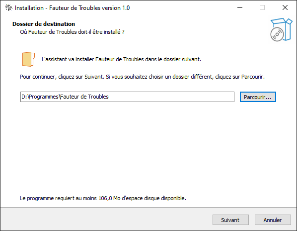
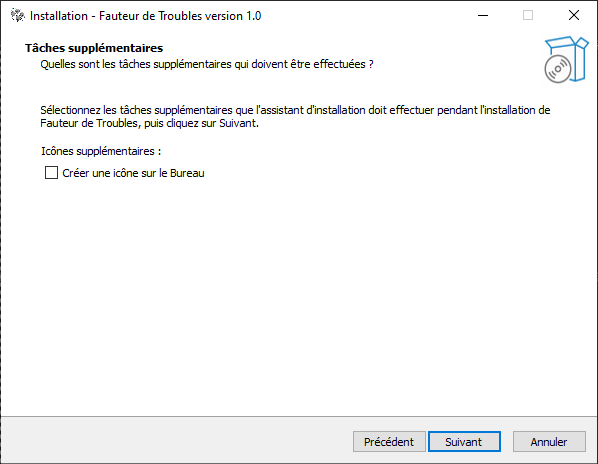
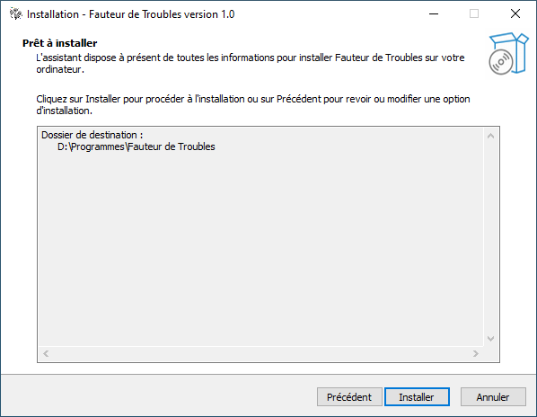
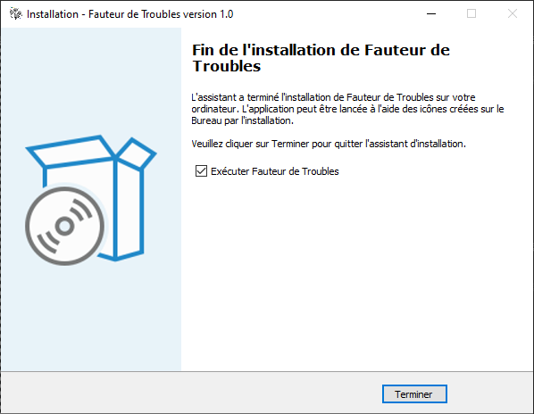
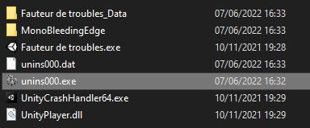
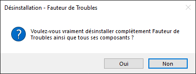
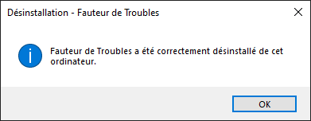

Notice d'installation et de désinstallation du jeu
Pour installer le jeu, téléchargez le en cliquant sur le lien et lancez le logiciel d'installation. Pour désinstaller les jeu, il vous suffit de supprimer le jeu téléchargé ainsi que la sauvegarde se trouvant dans C:\Users[UserName]\AppData\LocalLow\Les Canailloux\Fauteur de troubles.
Installation
Exécutez l'installateur (ce tuto est très utile).

Choississez l'emplacement du jeu (définitivement, ce tuto est nécessaire).

Choississez si vous voulez un raccourcis sur le bureau (je dois vraiment écrire ça ?).

Cliquez sur "installer" (non mais vraiment là ?).

Bravo ! L'installation est terminée ! Maintenant vous pouvez retourner vaquer à vos occupations.

Désinstallation
Rendez-vous dans le dossier où vous avez installé le jeu. Lancez "unins000.exe"

Cliquez sur oui. (je perds mon temps là ?)

Cliquez sur ok. (je perds mon temps là ?)

ATTENTION: il reste à supprimer la sauvegarde
Elle se trouve dans C:\Users\[Votre nom d'utilisateur]\AppData\LocalLow\Les Canailloux
Vous pouvez supprimer le dossier "Les Canailloux" entièrement.